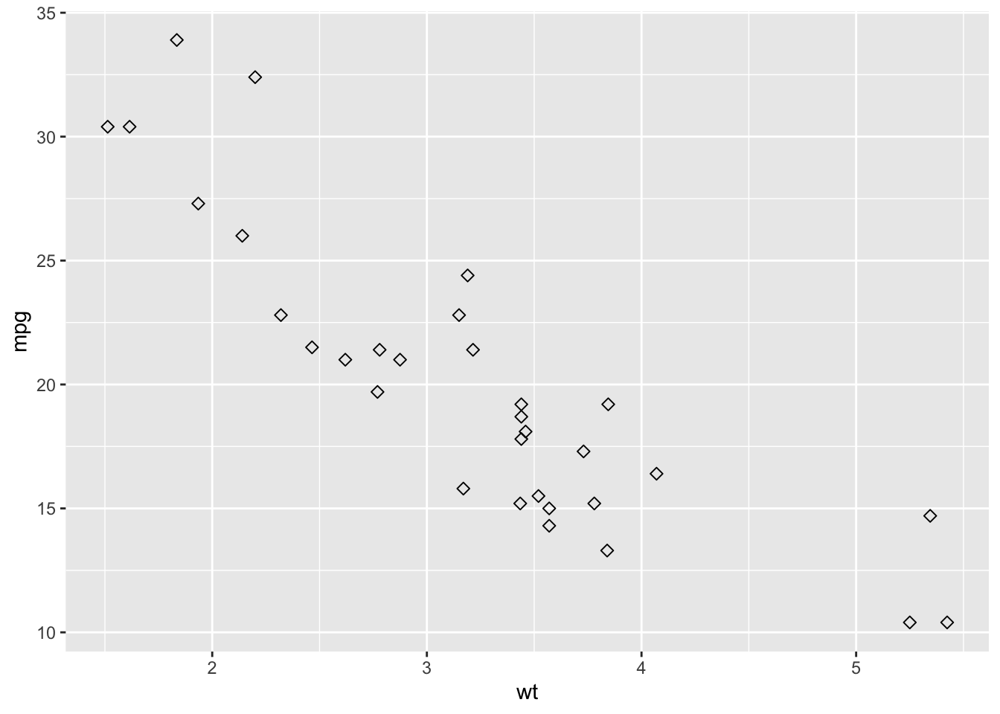

# Addition
3 + 7[1] 10Here are some R basics that will help you get started with Study Questions and Assignments.
Much of this is adpated from http://www.sthda.com/english/wiki/easy-r-programming-basics
The basic arithmetic operators are:
+ (addition)- (subtraction)* (multiplication)/ (division)^ (exponentiation).Type directly the command below in the console:
# Addition
3 + 7[1] 10# Multiplication
3 * 7[1] 21log2(x) # logarithms base 2 of x
log10(x) # logaritms base 10 of x
exp(x) # Exponential of x
abs(x) # absolute value of x
sqrt(x) # square root of xA variable can be used to store a value.
For example, the R code below will store the day of year (DOY) in a variable as “DOY”:
# Day of year (DOY) is 1 (i.e., Jan 1st)
DOY <- 1
# You can also use this notation, but it is more frequent when using R to use the above notation
DOY = 1Note that, it’s possible to use <- or = for variable assignments (athough as noted above, <- is more common)
To print the value of the created object, just type its name:
DOY[1] 1or use the function print() (you’ll see later use you use the function cat() to display output):
print(DOY)[1] 1You can also perform basic arithmetic using your variable
DOY + 1[1] 2You can change the value of the object:
# Change the value
DOY <- 365
# Print again
DOY[1] 365You can also write equations using previously defined variables. The following R code creates two variables including the width and the height of a rectangle. These two variables will be used to compute the area of the rectangle.
# Rectangle height
height <- 10
# rectangle width
width <- 5
# compute rectangle area
area <- height*width
print(area)[1] 50Basic data types are numeric, character and logical.
# Numeric object: How old are you?
my_age <- 28
# Character object: What's your name?
my_name <- "Jane"
# logical object: Are you a data scientist?
# (yes/no) <=> (TRUE/FALSE)
is_datascientist <- TRUEIt’s possible to use the function class() to see what type a variable is:
class(my_age)[1] "numeric"class(my_name)[1] "character"You can also use the functions is.numeric(), is.character(), is.logical() to check whether a variable is numeric, character or logical, respectively. For instance:
is.numeric(my_age)[1] TRUEis.numeric(my_name)[1] FALSEIf you want to change the type of a variable to another one, use the as.* functions, including: as.numeric(), as.character(), as.logical(), etc.
my_age[1] 28# Convert my_age to a character variable
as.character(my_age)[1] "28"A vector is a combination of multiple values (numeric, character or logical) in the same object. In this case, you can have numeric vectors, character vectors or logical vectors.
A vector is created using the function c() (for concatenate), as follow:
# Create a vector that includes multiple DOY values
DOY <- c(1,81,172,365) # the c() function creates a vector
DOY # This outputs the vector[1] 1 81 172 365Note: a vector can only hold elements of the same type. For example, you cannot have a vector that contains both characters and numeric values.
Find the length of a vector (i.e., the number of elements in a vector)
# Create a vector that includes multiple DOY values
length(DOY)[1] 4Case of missing values
In R missing values (or missing information) are represented by NA:
# Create a vector that includes multiple DOY values and assume we don't know one of the values
DOY_with_NA <- c(1,81,NA,365) # note the new variable name as to note overwrite the variable DOY
DOY_with_NA # This outputs the vector[1] 1 81 NA 365It’s possible to use the function is.na() to check whether a data contains missing value. The result of the function is.na() is a logical vector in which, the value TRUE specifies that the corresponding element in x is NA.
is.na(DOY_with_NA)[1] FALSE FALSE TRUE FALSESubsetting a vector consists of selecting a part of your vector.
Selection by positive indexing: select an element of a vector by its position (index) in square brackets
# Select DOY number 2
DOY[2][1] 81# Select DOY number 1 to 3
DOY[1:3][1] 1 81 172Selection by negative indexing: Exclude an element
# Exclude DOY number 2
DOY[-2][1] 1 172 365# Exclude DOY number 1 and 3
DOY[-c(1,3)][1] 81 365For more on subsetting vectors, see here
Note that, all the basic arithmetic operators (+, -, *, / and ^ ) as well as the common arithmetic functions (log, exp, sin, cos, tan, sqrt, abs, …), described in the previous sections, can be applied on a numeric vector.
If you perform an operation with vectors, the operation will be applied to each element of the vector. An example is provided below:
# The declination angle (defined as delta below) can be estimated using the simplified equation in Topic 4, Slide 7
delta <- -23.4*cos(2*pi*(DOY+10)/365)
delta[1] -22.9817392 -0.1007028 23.3991332 -23.0541505Other useful functions are:
max(x) # Get the maximum value of x
min(x) # Get the minimum value of x
# Get the range of x. Returns a vector containing
# the minimum and the maximum of x
range(x)
length(x) # Get the number of elements in x
sum(x) # Get the total of the elements in x
prod(x) # Get the product of the elements in x
# The mean value of the elements in x
# sum(x)/length(x)
mean(x)
sd(x) # Standard deviation of x
var(x) # Variance of x
# Sort the element of x in ascending order
sort(x)When you load a dataset, it will generally be loaded as a data frame (e.g., the datasets you will be loading for your Assignments). However, here are some simple examples to help you get more familiar with data frames.
A data frame can be created using the function data.frame(), as follow:
# Create a data frame
df <- data.frame(
DOY = c(1,81,172,365),
albedo = c(0.4,0.1,0.34,0.9),
Qh = c(10,400,350,-40),
Qe = c(20,100,500,12)
)
# Print
df DOY albedo Qh Qe
1 1 0.40 10 20
2 81 0.10 400 100
3 172 0.34 350 500
4 365 0.90 -40 12To check whether a data is a data frame, use the is.data.frame() function. Returns TRUE if the data is a data frame:
is.data.frame(df)[1] TRUETo select just certain columns from a data frame, you can either refer to the columns by name or by their location (i.e., column 1, 2, 3, etc.).
Positive indexing by name and by location
# Access the data in 'DOY' column
# dollar sign is used
df$DOY[1] 1 81 172 365# or use this
df[, 'DOY'][1] 1 81 172 365# Subset columns 1 and 3
df[, c(1,3)] DOY Qh
1 1 10
2 81 400
3 172 350
4 365 -40For more on subsetting a data frame see here. On this page you can also find more opperations you can perform using data frames.
While there are multiple ways to create a new variable in a data frame, as simple approach is to add a new variable directly to the data frame by creating a new column and assigning values to it.For example, add a new variable to calculate the Bowen ratio using Qh and Qe (recall the bowen ratio = Qh/Qe).
# to create a new variable called bowen_ratio (not that variable names can't have spaces in them) based on Qh and Qe we would do the following.
df$bowen_ratio <- df$Qh/df$Qe
# You can see that this add a new column to your data frame.
print(df) DOY albedo Qh Qe bowen_ratio
1 1 0.40 10 20 0.500000
2 81 0.10 400 100 4.000000
3 172 0.34 350 500 0.700000
4 365 0.90 -40 12 -3.333333Note that while you will not need to install packages when using RStudio Server (since they are pre-installed), this is helpful if you need to install packages using R installed on your own computer.
To install an R package, we can use the install.packages() function:
install.packages("dplyr")or you can install multiple packages using
install.packages(c("dplyr", "ggplot2","tidyverse")Now when you need to use a package in an Assignment or Study Question, you can call it using
library(dplyr)Here we will use the packe ggplot to create some basic plots.
Use the R code below:
#### Install and load ggplot2 package
# Installation
install.packages('ggplot2')
#NOTE: You only need to install a package once. Once it is installed, you can comment it out by adding # in front of it (e.g., # install.packages('ggplot2') )
# Loading the package
library(ggplot2)The data set mtcars is used in the examples below:
# Load the data
data(mtcars)
df <- mtcars[, c("mpg", "cyl", "wt")]
# Convert cyl to a factor variable
df$cyl <- as.factor(df$cyl)
head(df) mpg cyl wt
Mazda RX4 21.0 6 2.620
Mazda RX4 Wag 21.0 6 2.875
Datsun 710 22.8 4 2.320
Hornet 4 Drive 21.4 6 3.215
Hornet Sportabout 18.7 8 3.440
Valiant 18.1 6 3.460ggplot(): build plots piece by piece
This section describes briefly how to use the function ggplot(). Recall that, the concept of ggplot divides a plot into three different fundamental parts: plot = data + Aesthetics + geometry.
To demonstrate how the function ggplot() works, we’ll draw a scatter plot. The function aes() is used to specify aesthetics.
# Basic scatter plot
ggplot(data = mtcars, aes(x = wt, y = mpg)) +
geom_point()
# Change the point size, and shape
ggplot(mtcars, aes(x = wt, y = mpg)) +
geom_point(size = 2, shape = 23)
Question: How would you convert this to a line graph? Try asking chatgpt (or equivalent) ;)
(RStudio Server or Your Own Computer — Mac & PC)
These instructions apply whether you are working on RStudio Server or using R and RStudio installed on your own computer.
The key idea is the same in both cases: keep your files organized and use simple file paths.
Before writing any code, make sure that: - Your assignment file (.Rmd) - Your data files (.xlsx, .csv) - Any images used in the document
are all saved in the same folder.
This prevents file-path errors and ensures your work runs correctly on different computers and on the RStudio Server.
Packages only need to be installed once per computer or server account.
You should not reinstall packages every time you render your document.
Every time you start a new session, you must load the packages you are using.
Place this code chunk near the top of your .Rmd file.
If your Excel file is in the same folder as your .Rmd, use only the file name.
data_xlsx <- read_excel("my_data.xlsx", sheet = 1)
head(data_xlsx)
# If the Excel file has multiple sheets, you can specify the sheet name instead of the number.
data_xlsx <- read_excel("my_data.xlsx", sheet = "Sheet1")If your CSV file is in the same folder as your .Rmd, again use only the file name.
data_csv <- read_csv("my_data.csv")
head(data_csv)If you see an error like “file not found” or “cannot open the connection”, check the following:
.Rmd?Following the steps above will prevent most file-loading problems in this course.
Note: this goes beyond the basics and provides more in depth information on handling of dates in R for those that are curious/interested.
R has multiple packages to handle dates, including base R, lubridate, and chron. The most commonly used is lubridate (part of the tidyverse).
# Using as.Date
date1 <- as.Date("2025-01-01") # Output: "2025-01-01"date2 <- as.Date("01-01-2025", format = "%d-%m-%Y") # Output: "2025-01-01"# Add or subtract days
date1 + 5 # Adds 5 days
date1 - 7 # Subtracts 7 days
# Difference between two dates
diff <- as.Date("2025-01-10") - date1 # Output: 9 daysSys.Date()Install the package if needed:
install.packages("lubridate")library(lubridate)
# Automatically detect formats
date3 <- ymd("20250101") # "2025-01-01"
date4 <- dmy("01-01-2025") # "2025-01-01"year(date3) # 2025
month(date3) # 1
day(date3) # 1time <- ymd_hms("2025-01-01 10:30:00")
hour(time) # 10
minute(time) # 30
second(time) # 0Common date formats